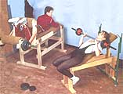

he design for the adjustable bench and the leg curl/extension machines shown above are fairly straightforward and thus self-explanatory. The weight rack fastened to the head of the bench is not Carlos DeJesus' design, but is one of several possible methods of supporting the weight bar on this machine between pressing repetitions.